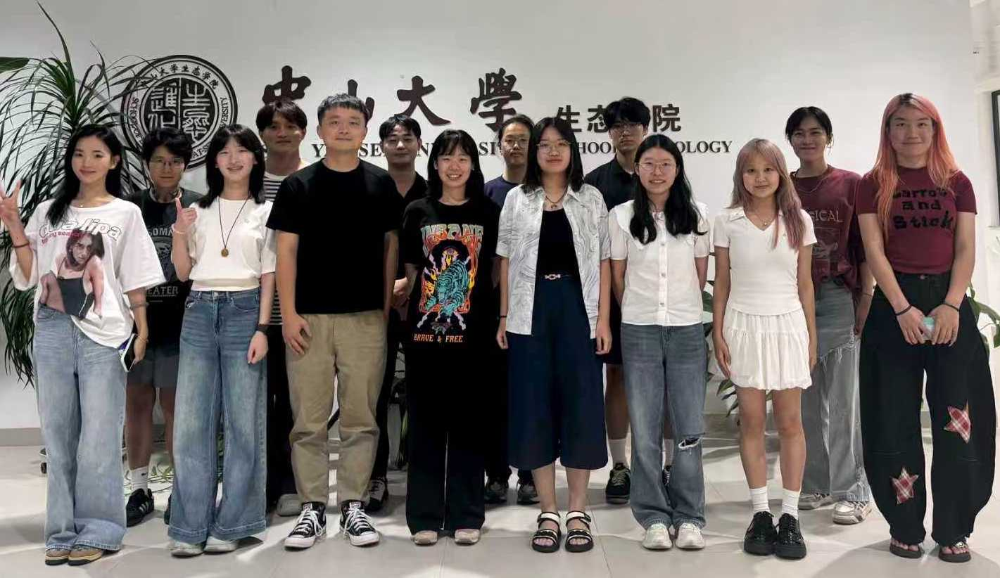
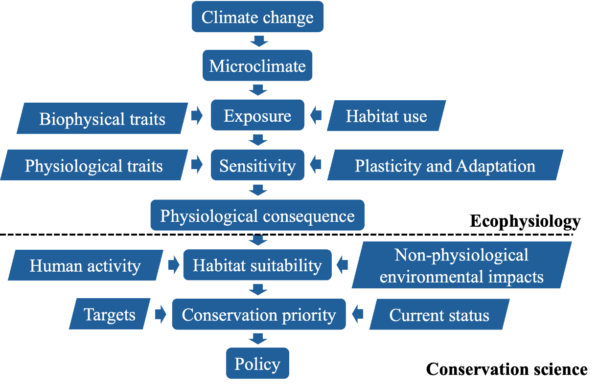

Lab briefing
Welcome to the APEC lab
Animal Physiological Ecology and Conservation — field and controlled experiments meet mechanistic models for terrestrial vertebrates.

Mission
The APEC Lab at Sun Yat-sen University focuses on the physiological ecology and conservation of terrestrial animals, especially reptiles and birds. Research integrates field and controlled experiments with mechanistic and statistical models to explore how animals interact with their environment. By studying physiological responses and ecological dynamics, we assess species’ adaptability and vulnerability to environmental change — aiming to enhance biodiversity conservation by bridging experimental research with predictive modeling.
中文语境下：APEC（动物生理生态与保护课题组）关注气候变化等环境变化对陆生脊椎动物的生理后果，并提出保护对策；整合实验、机理生态位模型与空间分析。

Work framework from the SYSU faculty page — trait → microclimate → physiology → niche → priority map.
Team photograph
Roster →APEC Lab group photo (2025) · School of Ecology, Sun Yat-sen University · from the official lab media archive.